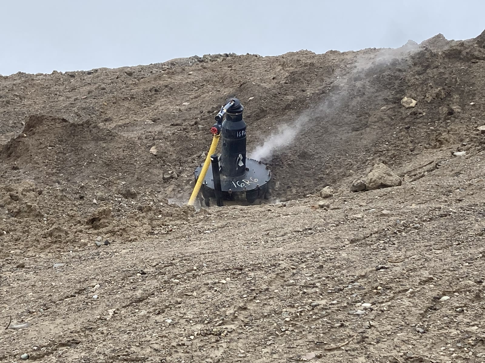
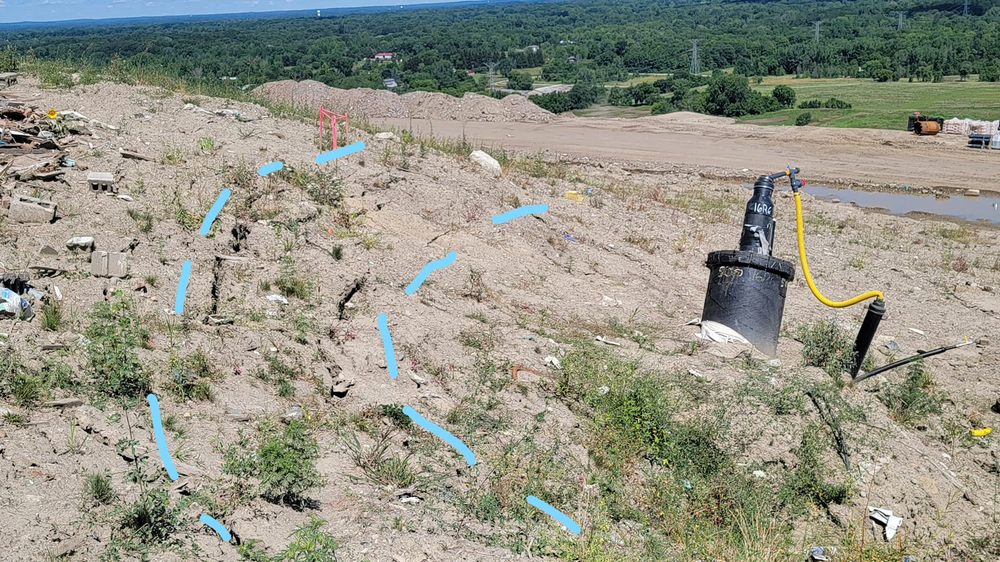
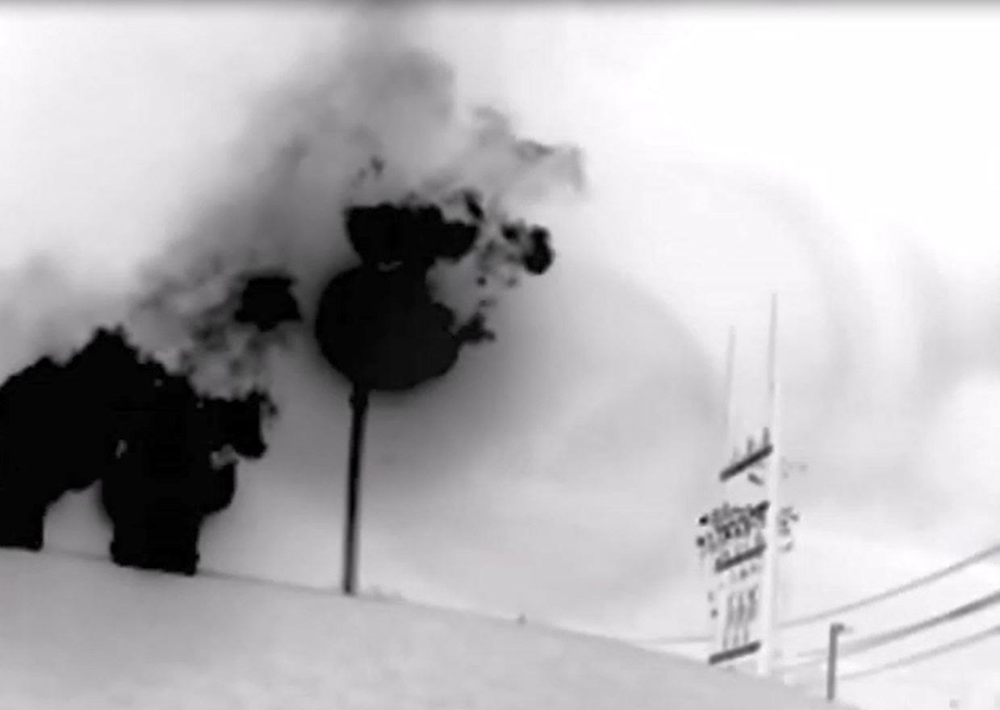
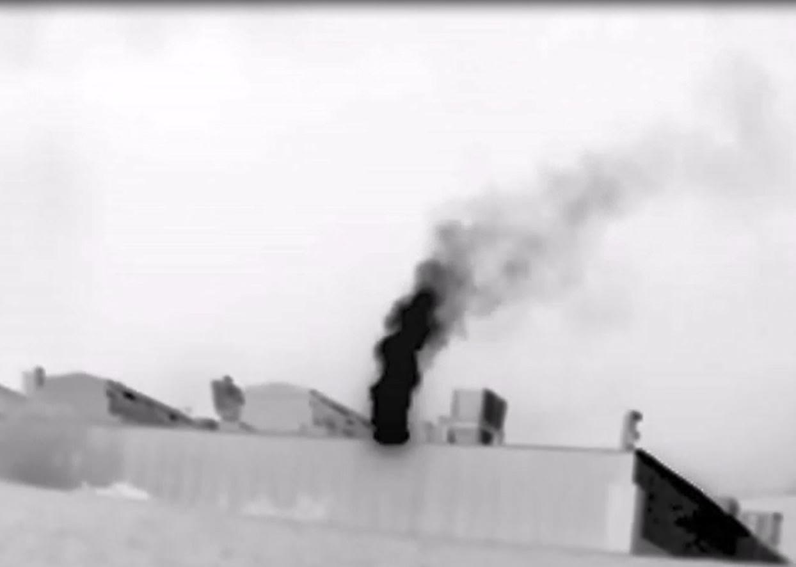
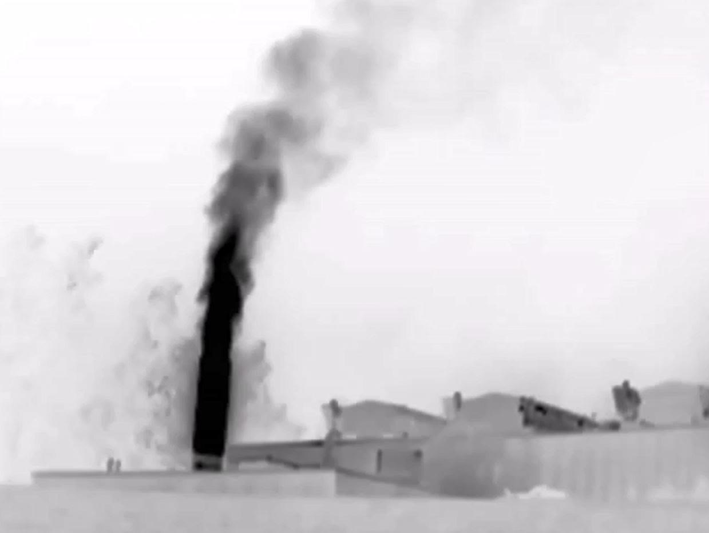

Public-record photographs and video of a localized subsurface event on the landfill, summer 2022.
In the summer of 2022, a landfill gas collection well on the Arbor
Hills slope was found tipped in a bowl of subsided ground, with vapor and steam
rising from the surface, pooled liquid at its base, and cracks running across the
nearby ground. Infrared images taken a few days later show gas plumes at the site's
flares and turbine stacks. Conditions like these — a displaced well, ground
subsidence, heat and vapor, strong odors and methane — are what the site's
regulatory record refers to as an elevated-temperature or subsurface-oxidation
event, sometimes called a "hot well."
These are public-information photographs and video of the event.
Every file carries its original camera timestamp, and several are GPS-tagged. Those
timestamps place the record between July 26 and August 11, 2022, and
the GPS coordinates resolve to the landfill itself
(42.4033° N, 83.5590° W,
Salem Township, Washtenaw County). The footage below is presented as-is; it is not
altered or interpreted. The site's current elevated-temperature record —
the readings that make this a live question, not a one-time 2022 event — is in the
thermal map and the
wellfield explorer.
The wellhead and the subsided ground
The affected landfill slope, where the gas well and disturbed ground are
located, filmed from below.Recorded 2022-08-09 · 43 sec

The gas wellhead standing in a depression of subsided ground on the landfill
slope, hose connected, with vapor venting. Geotagged at the landfill.Photograph, 2022-08-08The gas wellhead in the subsided pit, hose connected, with vapor venting from
the ground. Geotagged at the landfill.Recorded 2022-08-08 · 5 secA close view of the wellhead base, with pooled liquid and steam rising from
the wet ground. Geotagged at the landfill.Recorded 2022-08-08 · 19 secA close view of the churned ground and pooled liquid beside the wellhead.
Geotagged at the landfill.Recorded 2022-08-08 · 7 sec

Cracks and fissures running across the landfill slope, traced with blue marker
lines, with the same wellhead at right. Dated about two weeks before the wellhead images,
so the set documents conditions over roughly a two-and-a-half-week window, not a single
day.Photograph, 2022-07-26
Gas at the flares and stacks
The site's gas-management facility — flares and engine or turbine stacks
— seen from the grassed perimeter embankment.Recorded 2022-08-09 · 50 sec

An infrared (optical gas imaging) still showing dark gas plumes at the flare
area, with a monitoring tower at right. Optical gas imaging renders escaping hydrocarbon
gas as a dark plume; the original is labeled "methane."Photograph, 2022-08-11

An infrared (optical gas imaging) still showing a gas plume rising from a turbine
or engine stack. The original is labeled "methane."Photograph, 2022-08-11

An infrared (optical gas imaging) still showing a strong gas plume rising from a
turbine or engine stack. The original is labeled "methane."Photograph, 2022-08-11